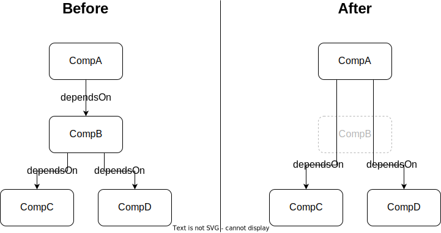

Available commands
This section only covers the commands where further information is required. For all commands use
cdx-ev --help # Lists commands and options
Before use, please consider the known limitations of the tool.
amend
This command accepts a single input file and will apply one or multiple operations to it. Each operation modifies certain aspects of the SBOM. These modifications cannot be targeted at individual components in the SBOM which sets the amend command apart from set. Its use-case is ensuring an SBOM fulfils certain requirements in an automated fashion.
See the command help with cdx-ev amend --help for a list of available operations. All operations marked [default] will run unless the command-line option --operation is provided. In the latter case only the specified operation(s) will be executed.
For more information on a particular operation, use the cdx-ev amend --help-operation <operation> command.
Note that the order of operations cannot be controlled. If you want to ensure two operations run in a certain order you must run the command twice, each time with a different set of operations.
Example:
# Run all default operations on an SBOM.
cdx-ev amend bom.json
# Run only the default-author and add-bom-ref operations.
cdx-ev amend --operation default-author --operation add-bom-ref bom.json
# Run the add-license-text operation. License texts are stored in a directory named 'license_texts'.
# Afterwards, run the delete-ambiguous-licenses operation.
cdx-ev amend --operation add-license-text --license-dir ./license_texts bom.json --output bom.json
cdx-ev amend --operation delete-ambiguous-licenses bom.json
Operations
This section details the more complex operations which require further explanation beyond the help text provided by --help-operation <operation>.
add-license-text
The operation add-license-text can be used to insert known full license texts for licenses identified by name. You can use this, for instance, in workflows where SBOMs are created or edited by hand - so a clutter-free JSON is preferred - then, in a last step, full texts are inserted using this operation.
License texts are inserted only if:
- The license has a
namefield. - The license has no
idfield. - The license has no or an empty
text.contentfield. - A matching file is found.
You must provide one file per license text in a flat directory. The stem of the filename, that is everything up to the extension (i.e., up to but not including the last period), must match the license name specified in the SBOM.
Example:
Given this license in the input SBOM:
{
"license": {
"name": "My license"
}
}
the operation would search the full license text in any file named My license, My license.txt, My license.md, or any other extension.
However, the file My license.2.txt would be disregarded, because its stem (My license.2) doesn't match the license name.
build-public
This command creates a redacted version of an SBOM fit for publication. It
- can optionally delete entire components matching a JSON schema provided by the user, and it
- deletes any property (i.e., item in the
propertiesarray of a component) whose name starts withinternal:from all components.
The actions are performed in this order, meaning that internal properties will be taken into account when matching the JSON schema. If a component containing nested components is deleted, those nested components are deleted as well.
The JSON schema must be formulated according to the Draft 7 specification.
Dependency-resolution
Any components deleted by this command are equally removed from the dependency graph. Their dependencies are assigned as new dependencies to their dependents.

Examples
Here are some JSON schemata for common scenarios to get you started.
When passed to the command, this schema will remove any component whose group is com.acme.internal.
{
"properties": {
"group": {
"const": "com.acme.internal"
}
},
"required": ["group"]
}
An extension of the above, the next schema will delete any component with that group, unless it contains a property with the name internal:public and the value true.
Note that the property itself will still be removed from the component, because its name starts with internal:.
{
"properties": {
"group": {
"const": "com.acme.internal"
}
},
"required": ["group"],
"not": {
"properties": {
"properties": {
"contains": {
"properties": {
"name": {
"const": "internal:public"
},
"value": {
"const": "true"
}
},
"required": ["name", "value"]
}
}
},
"required": ["properties"]
}
}
This schema will delete the three components with the names AcmeSecret, AcmeNotPublic and AcmeSensitive:
{
"properties": {
"name": {
"enum": ["AcmeSecret", "AcmeNotPublic", "AcmeSensitive"]
}
},
"required": ["name"]
}
The following schema is a little more involved. It will delete any component whose license text contains the string This must not be made public.
{
"properties": {
"licenses": {
"contains": {
"properties": {
"license": {
"properties": {
"text": {
"properties": {
"content": {
"pattern": "This must not be made public"
}
}
}
},
"required": ["text"]
}
},
"required": ["license"]
}
}
},
"required": ["licenses"]
}
merge
This command requires at least two input files, but can accept an arbitrary number. Inputs can either be specified directly as positional arguments on the command-line or using the --from-folder <path> option. Files specified as arguments are merged in the order they are given, files in the folder are merged in alphabetical order (see note below).
If both positional arguments and the --from-folder option are used, then the position arguments are merged first, followed by the files in the folder. The command will not merge the same file twice, if it is specified on the command-line and also part of the folder.
When using the --from-folder option, the program looks for files matching either of the recommended CycloneDX naming schemes: bom.json or *.cdx.json.
Note on merge order:
Input files in the folder provided to the --from-folder option are sorted in a platform-specific way. In other words, they are merged in the same order they appear in your operating system's file browser (e.g., Windows Explorer).
The process runs iteratively, merging two SBOMs in each iteration. In the first round, the second submitted SBOM is merged into the first. In the second round the third would be merged into the result of the first round and so on.
In mathematical terms: output = (((input_1 x input_2) x input_3) x input_4 ...)
A few noted on the merge algorithm:
- The
metadatafield is always retained from the first input and never changed through a merge with the exception of thetimestamp. - Components are merged into the result in the order they first appear in the inputs. If any subsequent input specifies the same component (sameness in this case being defined as having identical identifying attributes such as
name,version,purl, etc.), the later instance of the component will be dropped with a warning. This command cannot be used to merge information inside components. - The resulting dependency graph will reflect all dependencies from all inputs. Dependencies from later inputs are always added to the result, even if the component is dropped as a duplicate as described above.
- Uniqueness of bom-refs will be ensured.
- If the inputs contain VEX information in the form of a
vulnerabilitiesfield, this will be merged as well. For details see section on themerge-vexcommand.
merge-vex
[Deprecated] - The merge-vex command will be superseded by a new vex command in a future version. For further information refer to the discussion.
This command requires two input files, a SBOM and a VEX file that shell be merged. The VEX file needs to be compatible with the SBOM.
If the SBOM does not contain a VEX file, the VEX file simply be added to the SBOM.
If the SBOM already contains a VEX section, the two VEX files are merged uniquely. In the case of duplicate entries, the ratings will be merged. Should two ratings of the same method contain a different rating, the newer one will be kept.
set
This command sets properties on specified components to specified values. If a component in an SBOM is missing a particular property or the property is present but has a wrong value, this command can be used to modify just the affected properties without changing the rest of the SBOM.
For this command to work, three bits of information must be provided by the user: The target component(s) to modify as well as the name and new value of each property to set on the target component.
This data can either be passed directly on the command-line — in this case only a single update can be performed per invocation — or in a JSON file — this allows performing an unlimited number of updates in a single invocation.
Target components
The target component can be identified through any of the identifiable properties defined by CycloneDX, specifically: cpe, purl, swid or the combination of name, group and/or version (collectively called coordinates).
If coordinates are used to identify the target, they must match the component fully. In other words, if only name is given, it will only match components with that name which do not contain version or group fields.
In coordinates it is also possible to provide a range of versions using the version-range parameter instead of version following the PURL specification as referenced by CycloneDX.
The version range has the format
vers:<versioning-scheme>/<version-constraint>|<version-constraint>|...
beginning with the vers identifier. Following this the versioning-scheme is specified, in the case of semantic versioning this would be semver or generic. Following this a list of constraints divided by an | can be provided, to specify which versions are in scope.
A few examples:
To target all versions higher than and not including 2.0.0 the version range to provide would be:
vers:generic/>2.0.0
To target all versions higher than and not including 2.0.0 that are also smaller than and including 4.5.0 the version range to provide would be:
vers:generic/>2.0.0|<=4.5.0
To target all versions higher than and not including 2.0.0 that are also smaller than and including 4.5.0 except the single version 4.1.1 the version range to provide would be:
vers:generic/>2.0.0|!=4.1.1|<=4.5.0
To target all versions to target all versions higher than and not including 2.0.0 that are also smaller than and including 4.5.0 as well as the additional version 5.0.0 the version range to provide would be:
vers:generic/>2.0.0|<=4.5.0|5.0.0
Note that instead of specific version constraints it is possible to provide a wildcard * to allow all versions. So to target all versions the provided version range would be:
vers:generic/*
Further information on the supported versions can be found here univers documentation.
If the target component isn't found in the SBOM, the program aborts with an error by default. This error can be downgraded to a warning using the --ignore-missing flag.
Protected fields
Some fields are protected and cannot be set by default. The full list of protected properties is:
- cpe
- purl
- swid
- name
- group
- version
- components
To set any of these fields, use the --allow-protected command-line switch.
Values
The value must be given as a valid JSON value. That means command-line usage can be a little strange, when setting a simple string value. To be valid JSON, the string must be surrounded by double quotes. Since double quotes hold a special meaning in most shells, they will likely have to be escaped. An example for bash follows.
# Set a simple string property, such as copyright in bash
cdx-ev set bom.json --cpe <target-cpe> --key copyright --value '"2022 Acme Inc"'
# Set the copyright for all versions of the given component
cdx-ev set bom.json --group=org.acme --name=my_program --version-range vers:generic/* --key copyright --value '"Copyright 2024 Acme"'
Conflicts
Conflicts arise when a target component already has a value for the specified property. When this happens, the command follows the following rules to determine how to proceed:
- If the new value is
null, delete the existing property. The tool assumes that a user who setsnullis aware that the property exists and wants to delete it. - If the property is an array, the new value is appended to the old value.
- If the
--ignore-existingcommand-line option is set, the old value will not be overwritten. - If the
--forcecommand-line option is set, the old value is overwritten with the new. - If the tool is running in an interactive terminal, the user is prompted to decide whether to overwrite the old value.
- If none of the above applies, an error is thrown.
Hawk-eyed readers will have spotted a little stumbling block in these rules. What if an array should be overwritten? A little trickery is needed here. The property must first be explicitly deleted by setting it to null, then re-added with the new value.
On the command-line this can be done in two subsequent invocations:
# Overwrite an array-valued property
cdx-ev set bom.json --cpe <target_cpe> --key licenses --value null
cdx-ev set bom.json --cpe <target_cpe> --key licenses --value '[{"license": {"id": "MIT"}}]'
When passing the set list in a file, two separate updates must be specified for the same target component.
Set list file format
When passing the targets, names and values in a file, the file must conform to this format:
[
{
"id": {
# Could be any one of the identifying properties in CycloneDX.
# Multiple identifiers are not allowed (with the special exception of name,
# group and version/version-range which are only valid together)
"cpe": "CPE of target component goes here"
},
"set": {
# Sets a simple property
"copyright": "2022 Acme Inc",
# Deletes a property
"author": null,
# Sets an array array-valued property. If the property already exists on the target,
# the new value will be appended to the existing one.
"licenses": [
{
"license": {
"id": "MIT"
}
}
]
}
},
...
]
Example for the use of version ranges:
[
{
"id": {
"name": "web-framework",
"group": "org.acme",
# It is possible to provide a version range
# the format must comply with the PURL specification for version ranges
"version-range": "vers:generic/>=1.0.2|<2.0.0",
},
"set": {"copyright": "1990 Acme Inc"},
},
{
"id": {
"name": "firmware-framework",
"group": "org.acme",
# It is also possible to provide a wildcard for the version
# if the version is set to "*" all versions of the specified schema are passed
"version-range": "vers:generic/*",
},
"set": {"copyright": "1990 Acme Inc"},
},
...
]
The above provided example would set the copyright in the component
{
"name": "web-framework"
"group": "org.acme",
"version":"1.5.0"
}
while it would leave the component
{
"name": "web-framework"
"group": "org.acme",
"version":"2.0.0"
}
unchanged.
This file can then be applied as the following example shows:
# Perform several operations on properties using set-command
cdx-ev set bom.json --from-file mysetfile.json
validate
This command is used to validate the SBOM against a JSON schema.
Schema selection
This tool can validate SBOMs against any user-provided JSON schema but for convenience, two schema types are built in:
- The default schema type validates against the stock CycloneDX schema.
- The strict schema type refers to the strict variants of the stock CycloneDX schema which were discontinued after version 1.3.
- The custom schema type uses a more restrictive schema which accepts a subset of CycloneDX. Additional requirements incorporated into the schema mostly originate from the NTIA.
You can select the schema with the --schema-type or --schema-path options:
cdx-ev validate bom.json [--schema-type default] # stock CycloneDX schema
cdx-ev validate bom.json --schema-type custom # built-in custom schema
cdx-ev validate bom.json --schema-path <json_schema.json> # your own schema
For all built-in schemas, the tool determines the CycloneDX version from the input SBOM. The following versions are currently supported:
| Type | Supported CycloneDX versions |
|---|---|
default |
1.2 to 1.5 |
strict |
1.2 to 1.3 |
custom |
1.3 to 1.5 |
Validation of filename
The tool, by default, also validates the filename of the SBOM. Which filenames are accepted depends on several command-line options:
--no-filename-validationcompletely disables validation.- Use
--filename-patternto provide a custom regex. The filename must be a full match, regex anchors (^ and $) are not required. Regex patterns often include special characters. Pay attention to escaping rules for your shell to ensure proper results. - In all other cases, the acceptable filenames depend on the selected schema:
- When using the stock CycloneDX schema (
--schema-type defaultor no option at all) or when using your own schema (--schema-pathoption), the validator accepts the two patterns recommended by the CycloneDX specification:bom.jsonor*.cdx.json. - When validating against the built-in custom schema (
--schema-type custom), filenames must match one of these patterns:bom.jsonor<name>_<version>_<hash>|<timestamp>|<hash>_<timestamp>.cdx.json. Read on for some clarifications.
- When using the stock CycloneDX schema (
<name> and <version> correspond to the respective fields in metadata.component in the SBOM.
<timestamp> corresponds to metadata.timestamp and <hash> means any value in metadata.component.hashes[].content.
Either timestamp or hash must be present. If both are specified, hash must come first.
Output
By default, the command writes human-readable validation results to stderr only. For integration into CI/CD several machine-readable report formats are supported as well. To have a report written to a file, select the format using the --report-format option and an output path using the --report-path option.
These formats are currently supported:
Examples:
# Write human-readable messages to stderr and a report in warnings-ng format to report.json
cdx-ev validate bom.json --report-format warnings-ng --report-path report.json
# Write only a report in GitLab Code Quality format to cq.json
cdx-ev --quiet validate bom.json --report-format gitlab-code-quality --report-path cq.json